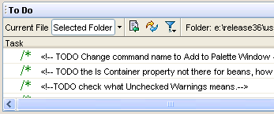
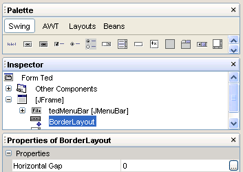

- Code folding. You can hide method bodies, comments, import
statements, and other blocks of code by folding them in the Source Editor.
|
 |
- Overriding methods. The Source Editor marks all inherited methods
in the the left margin. Hold your mouse over the icon to see which class
or interface the method is inherited from.
|
- To Do window. You can easily track your tasks and TODO comments
using the To Do window. You can view all tasks in a single file or in
a selected directory.
|
 |
- Automatic insertion of closing bracket/quotes/parentheses. The
Source Editor now automatically closes all open parentheses, brackets,
and quotes. For example, type System.out.println( and the IDE
automatically enters the closing ).
|
- Form Editor integration. The Form Editor has been integrated
as a tab in the Source Editor. The GUI Editing workspace has been replaced
with with Palette, Inspector, and Properties windows that appear automatically
whenever a Form Editor tab is selected.
|
 |
- Print as HTML. You can take any Java file and output it to
formatted HTML for publishing on the web.
|
- Tooltip error description. Hold the mouse over any text containing
compilation errors to view the error in a tooltip.
|
- Easy splitting of the Source Editor. Drag and drop any open
document tab to the bottom or left margin of the Source Editor to view
multiple documents at once.
|